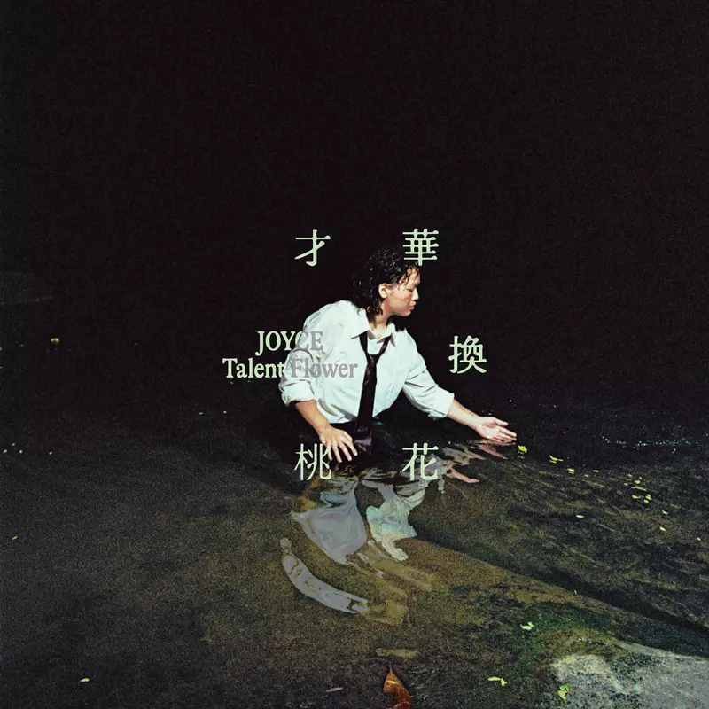
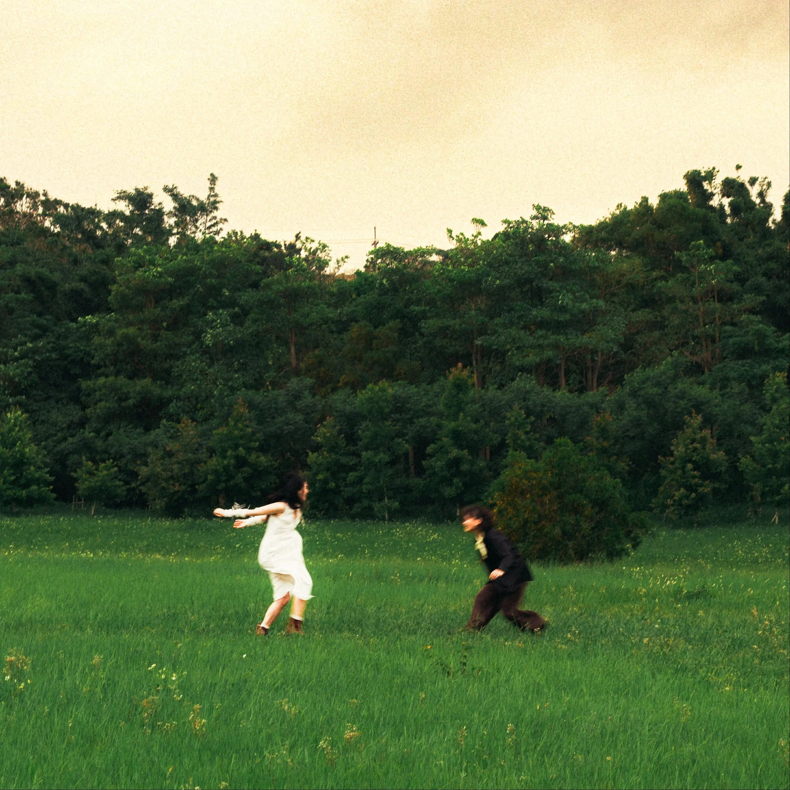

Album#12
才華換桃花 (Talent Flower)
{kind=link}

专辑信息
- 专辑名称：才華換桃花(Talent Flower)
- 歌手：JOYCE 就以斯 (A woman rushing for money and dream.)
- 年份：2025-12-12
- 风格：流行
- 时长：约 40 分钟

这是一张 2025 年 12 月 12 日发行的新专辑，是在每日推荐里发现的，是我第一次听 JOYCE 的歌。 JOYCE 的声音清透又充满了活力，闪闪发光，很喜欢！
《才華換桃花(Talent Flower)》听起来很轻松，就像是午后的阳光一样，让人心情愉悦。整张专辑的作词和作曲都是「純愛天然系唱作歌手」JOYCE 完成的。
專輯命名源自於她過往總愛書寫母胎單戀與浪漫幻想的創作習慣，某次音樂人好友 Andr 在她宣傳音樂的短影音底下留言：「欸，你是不是都把桃花換成才華啦？」那瞬間 JOYCE 就以斯才意識到，自己真的是把談戀愛的時間全用來創作。於是她乾脆把自己視為「桃花換才華」的「純愛」戰士，把那些深刻情感全化成旋律，即使暈船也要暈得快樂。
[…]
整張專輯以曲序分成上、下半場來鋪陳情感的軌跡。前五首歌像是對外的獨白，以「我」為主角，聽感甜美、陽光、直率；後半段則逐漸轉向內心的陰暗處，以「他者」視角展開，從「想被愛」轉向「如何愛人」。
那些歌不只是告白，更是對「陪伴」的提問 ⸺ 若對方不再相信愛情，該如何安慰？當他傷心難熬，又能如何相伴？
JOYCE 就以斯在創作裡敞開自己，在她的歌既可以感受到推人勇往直前的能量，也給人一個能放心傾訴哀傷的樹洞。
TRACKLIST
妳和吉他 (You & Guitar)
緊張 我才不緊張
坐在這裡和我最喜歡的妳和吉他
偷看你一下 我就有辦法
猜到下一個和弦你想走到哪
不知道為什麼又想寫快樂的歌
這個世界合聲頻率 都變和諧了
抬頭看見 你唱著我們的歌 心臟都要停止了
時間能不能等一下 氧氣瓶不夠啦
我喜歡我們之間的節奏
喜歡你哼的旋律 它環繞著我 (環繞著我)
冷空氣凝結成了心意 不小心說出口
你一舉和一動 藏不住嘴角泛紅
愛你不需要理由 從來不需要理由
緊張 我才不緊張
妳就坐在隔壁 跟我彈同一把吉他
偷看你一下 我就有辦法
讓妳知道妳就是我心之所向
我知道為什麼又想寫快樂的歌
我的世界有妳我就是快樂的人
抬頭看見 你唱著我們的歌 心臟都要停止了
時間能不能等一下 氧氣瓶不夠啦
我喜歡我們之間的節奏
喜歡你哼的旋律 它環繞著我 (環繞在我左右前後)
冷空氣凝結成了心意 不小心說出口
你一舉和一動 藏不住臉上泛紅
愛你不需要理由 從來不需要理由
我喜歡你 你是否也喜歡我
我喜歡你 你是否也喜歡我
一首歌時間就夠 我為你生活伴奏
最喜歡的妳和吉他都看著
我喜歡我們之間的節奏
喜歡你哼的旋律 它環繞著我 (環繞著我)
冷空氣凝結成了心意 不小心說出口
你一舉和一動 眼中早就以斯我
愛你不需要理由 從來不需要理由
開場〈妳和吉他〉紀錄戀愛腦母胎單的心動過程，用三件式樂器（電吉他、貝斯與爵士鼓）堆疊出充滿粉紅泡泡的動感氛圍，讓人一聽便忍不住露出姨母笑。
心动的感觉，编曲中有一些响指，听起来感觉很轻松。
喜欢的人坐在旁边，紧张吗？我才不紧张！
只要你開心 (YOU HAPPY, I HAPPY)
原本乾淨快樂的生活
暈船暈到個七零八落
我的浪漫都沒了自由
腦中只想和你一起過
妳若心情不好 我陪妳走走
一首不夠 我寫一百首
寫歌做麵 只要你答應我
baby girl 妳聽我說
只要你開心 開心
講電話講到關機
在一起寫歌彈琴 台北台中的距離
去你家教英文 我也願意
全民英檢過初級 初級
我們就一起旅行
I know it’ll be a good trip
love you without a few drink
因為愛妳 是毫不費力 oh darling
還在單身 就想到新動機
把吉他給我 我來唱給你聽
知道你遲早會愛我不擔心
我還有六十年 可以追你
寫歌彈琴我靠的是樂理
和你談情我靠得是實力
I gotta pretend to be cool
but I’m losing control
baby girl 我到底該怎麼做
只要你開心 開心
講電話講到關機
在一起寫歌彈琴 台北台中的距離
去你家教英文 我也願意
全民英檢過初級 初級
我們就一起旅行
I know it’ll be a good trip
love you without a few drink
因為愛妳 是毫不費力 oh darling
let me love you
just, just let me love you (give me love)
let me love you
just let me love you
let me love you
just, just let me love you (give me love)
let me love you
give me love
你知道我在講你
你知道我在想你
就這樣進入我的心裡我無法反擊
欸 我家的坪數還算大坪
心裡剛好還有空間可以裝的下你
寫一張專輯這段愛情將不再是秘密
我寫曲寫到 緣分來臨 是否也該認命
這是愛情 我不曾也不將是你的唯一
想的一樣的人 就值得依靠在一起（只要你開心）
寫一張專輯這段愛情將不再是秘密（只要你開心）
我寫曲寫到 緣分來臨 是否也該認命（our love can be a poetry）
這是愛情 我不曾也不將是你的唯一（成為你開心的原因）
想的一樣的人 就值得依靠在一起
寫一張專輯這段愛情將不再是秘密
我寫曲寫到 緣分來臨 是否也該認命
這是愛情 我不曾也不將是你的唯一
想的一樣的人 就值得依靠在一起
接續〈只要你開心〉則唱出自信 100% 的直球告白，從暈船的心跳加速，到終於說出口的勇氣，全都在她坦然的歌聲裡閃閃發亮。
直球告白，闪闪发亮！You Happy，I Happy！
爱你，只要你开心，怎么样都好。
MV：JOYCE 就以斯 - 只要你開心 (Official Music Video)，有点搞怪，哈哈。
你說話的聲音好細 (Silvery Voice of You)
baby believe me 我說的話都是真心
還是要相信愛情 就算跌了個跤也沒關係
讓我把你的膝都擦乾淨
讓我把你的心好好的疼惜
你的特別讓我著迷
我喜歡你不只是任性
當你說 當你說你嚮往自由 我願意服從
帶我走 移民到南半球
當你說你嚮往自由 我願意服從
帶我走 去更遙遠的宇宙
你看天上的雲朵 把星星都淹沒
若隱若現的閃爍
你說話的聲音好細
想把我泡進你的溫柔懷裡
像是磁鐵把我拉近 我又動了心
你在這裡聽我彈琴
我卻只敢看琴 我不敢看你
吉他上遺留你香氣 我又動了心
baby believe me 我說的話都是真心
還是要相信愛情 就算跌了個跤也沒關係
讓我把你的膝都擦乾淨
讓我把你的心好好的愛惜
你的特別讓我著迷
我喜歡你不只是任性
當你說 當你說你嚮往自由 我願意服從
帶我走 移民到南半球
當你說你嚮往自由 我願意服從
帶我走 去更遙遠的宇宙
你看天上的雲朵 把星星都淹沒
若隱若現的閃爍
你說話的聲音好細
想把我泡進你的溫柔懷裡
像是磁鐵把我拉近 我又動了心
你在這裡聽我彈琴
我卻只敢看琴 我不敢看你
吉他上遺留你香氣 我又動了心
待你留下的痕跡成了回憶
我再見到你
〈你說話的聲音好細〉回到她最擅長的木吉他彈唱，佐以弦樂四重奏，用長達五分半的篇幅，訴說她對愛與緣分的信念，反覆提醒「還是要相信愛情」，溫柔安撫所有曾被愛刺痛的人。
好温柔的一首歌，温柔到心都化了。是专辑里最喜欢的一首。
推荐看看 MV：JOYCE 就以斯 - 你說話的聲音好細 (Official Music Video)， JOYCE 穿着黑色的西装坐在幽绿的草地上弹着吉他，风温柔的吹过她的头发，远处一个穿着白裙的长发女孩跳着舞，像是精灵一般。歌曲进行到一半，女孩凑近了 JOYCE，JOYCE 放下吉他和女孩一起翩翩起舞，好美。
我也很喜欢这首歌的封面:
{kind=link}

靠很近 (Close Enough)
想和你靠很近 靠很近
想聽見你心跳動的聲音
喔我好喜歡你 我喜歡的你
還不知道我對她一見鍾情
想和你在一起 在一起
此時此刻早就已是我的目的地
待明天太陽升起
我又多一整天可以愛你
想和你靠很近 靠很近
想聽見你心跳動的聲音
喔我好喜歡你 我喜歡的你
還不知道我對她一見鍾情
想和你在一起 在一起
此時此刻早就已是我的目的地
待明天太陽升起
我又多一整天可以愛你
貪心 這不貪心
當我們又和在一起
我是說聲音 聲音啦
貪心 我才貪心
彈了吉他還談走你的心
我們一樣透明
想和你在一起 在一起
此時此刻早 JOYCE(就已是) 我的目的地
待明天太陽升起
就等你說一句
我也願意
專輯核心曲〈靠很近〉以鋼琴描繪曖昧的輕快步伐，三拍子 R&B 節奏像戀人逐步靠近的心跳。歌詞「此時此刻早就已是（JOYCE）我的目的地」點出整張專輯的主軸，也巧妙藏入「JOYCE 就以斯」的名字，提醒自己在人生旅途的每段關係中，都要專注於當下、真實感受每一刻。
三拍子像是舞曲，将像是跳着舞的两个人，越来越靠近。
心跳119 (Heartbeat 119)
心跳119 快來救護我
把氧氣都給我 心動的節奏也不過
119 快來救護我
把氧氣都給我 人工呼吸急救
吸塵器蓋過了你和我的遐想
聽診器透露著你和我的緊張
你的身體怎麼長得跟我的一模一樣
兩個女生在一起房間太香
背景音樂在播放
陷太深的妳和我早就無法自拔
躲躲藏藏 搞得我們像是威力一樣
停紅燈親你一下又被後車按喇叭
這個四月像浪漫電影這樣是可以的嗎
119 快來救護我
把氧氣都給我 心動的節奏也不過
119 快來救護我
把氧氣都給我 人工呼吸急救
背景音樂在播放
陷太深的妳和我早就無法自拔
躲躲藏藏 搞得像是1950一樣
在白紙上作畫的妳畫我這預言家
這個四月像浪漫電影這樣是可以的吧
當快樂向我們招手
勇敢地去追求 追求
就知道你也會愛我
這四月的午後 oh
聽見你心臟撲通撲通跳動
哼著寫給你的歌 早已不是夢
坐在公園和你一起吃 同一個馬卡龍
不會說謊的梅林 可能還得是我
119 快來救護我
把氧氣都給我 心動的節奏也不過
119 快來救護我
把氧氣都給我 人工呼吸急救
當快樂向我們招手
勇敢地去追求 追求
就知道你也會愛我
這四月的午後 oh
聽見你心臟撲通撲通跳動
哼著寫給你的歌 早已不是夢
坐在公園和你一起吃 同一個馬卡龍
不會說謊的梅林 可能還得是我
心跳119 快來救護我
把氧氣給我 心跳呼吸的節奏
119 快來救護我
把氧氣都給我 人工呼吸急救
119 快來救護我
心跳119 快來救護我
中段的〈心跳119〉以心跳 BPM 設計速度，巧妙呼應急救專線「119」，呈現熱戀的悸動與歡快。
对 BPM 不敏感，听不太出来歌曲的 BPM 是不是 119，看了介绍才知道有这么个设计。
「停紅燈親你一下又被後車按喇叭 這個四月像浪漫電影這樣是可以的嗎」
真是青春浪漫呀。
曲子结束部分的管乐也好听。
無限等待 (Endless Longing)
偷看共享相簿裡
我們看起來超皮
背對背靠得很近
在冒汗的手掌心
也想和你彈鋼琴
把這座城市當做唯一
baby 你知道我整夜都在想你
不承認是我的想念太過放肆
不用多說話 你我是同個想法
在車站送你離開
牆壁時鐘忽然停擺
抱緊後把手鬆開
23 21 的浪漫
在腦海待續著未完 開始期待
和你上山露營看那星海
我們之間都是愛
快停止我的無限等待
偷看共享相簿裡
我們看起來超屁
面對面靠得很近
愛情不需要捷徑
命中注定沒邏輯
妳是否願意讓我再愛你
baby 你知道我整夜都在想你
不承認是我的眷戀太過放肆
不用多說話 你我是同個想法
在車站送你離開
牆壁時鐘忽然停擺
抱緊後把手鬆開
23 21 的浪漫
在腦海待續著未完 開始期待
和你上山露營看那星海
我們之間都是愛
快停止我的無限等待
想和你共享我所有的浪漫
我們之間都是愛
快停止我的無限等待
〈無限等待〉描寫遠距離戀愛，思念之情糾結在一起的腦內小劇場。
远距离恋爱，好不容易见一面，又要分开了，在站台紧紧拥抱，又进入了无尽的等待，「快停止我的无限等待」啦。
说起远距离恋爱，我也很喜欢告五人的《远距离恋爱》。 p
interlude〈20240501〉
而 interlude〈20240501〉以一段手機錄音紀念已故父親的聲音 ──那時 JOYCE 正彈唱剛寫出的〈心跳119〉，父親在旁輕聲讚賞，成為她最珍貴的回憶。
父亲：「这是今天的新歌呀？」
JOYCE：「嘻嘻，没错！」
父亲：「写得不错！」
就算覺得今天很難受 (It's okay ot feel sad)
就算覺得今天很難受
沒吃飯也要記得點外送
五月的天空 烏雲有點濃
四季更迭依舊 我們沒能控制什麼
感受 都是 感受
有時愛得濃 有時會困惑
晴天雨天都只是生活
同一顆太陽朝著我們招手 它說
感受 都是 感受
房子裡太悶就可以出來見一見我
到公園散散心也會是不錯
深呼吸吐氣 陽光下的黃花很自由
就算覺得今天很難受
我愛的妳選擇放開了手
五月的天空 烏雲有點濃
四季更迭依舊 我們沒能控制什麼
感受 都是 感受
有時愛得濃 有時會困惑
晴天雨天都只是生活
同一顆太陽朝著我們招手 它說
放手 學著 去放手
房子裡太悶也可以出來見一見我
到公園散散心也會是不錯
深呼吸吐氣 陽光下的黃花得自由
現在的我也沒能做什麼
相信勇敢的我們會愛自己 好好生活
寫給難過之人的安慰之歌〈就算覺得今天很難受〉，是她首次在錄音室自彈自唱、同步錄音完成的作品，以赤裸真誠的聲音陪伴每一個快撐不住的時刻。
也是很温柔的一首歌。
「就算覺得今天很難受 沒吃飯也要記得點外送」
如果今天经历了一些难受的事情，或者加班到了很晚还没吃上饭，听到这句歌词会委屈得落泪吧。
分享辛波斯卡的一首诗 ⸺ 《回家》：
他回家。一语不发。
显然发生了不愉快的事情。
他和衣躺下。
把头蒙在毯子底下。
双膝蜷缩。
他四十上下，但此刻不是。
他活着 ⸺ 却彷佛回到深达七层的
母亲腹中，回到护卫他的黑暗里。
明天他有场演讲，谈总星系
太空航行学中的体内平衡。
而现在他蜷着身子，睡着了。
就算觉得今天很难受，也要好好吃饭，好好睡觉（就像诗里说的，蜷缩在一起，回到护卫你的黑暗里），难受的日子总会过去的。
不怕孤寂 (Healing)
在難過到底 無能為力 悲傷的時刻
桌上的紙巾空了 一盒又一盒
臉上淚痕 哭得累了 無可又奈何
放不下的先別勉強了
想著想著 緣分還未盡的時刻
受傷的心 找不到快樂
睡了又醒 一樣在煩惱中的人
今晚不怕孤寂了
像風一樣 水一樣
吹散了頭髮 濕紅了眼眶
直到在夢中 才能見到他啊
在難過到底 無能為力 悲傷的時刻
還是不習慣的 少了一個人
臉上淚痕 哭得倦了 無可又奈何
放不下的先別堅強了
想著想著 願望在心裡誠實了
溫柔的心 暫時還找不到快樂
睡了又醒 一樣在煩惱中的人
今晚不怕孤寂了
像風一樣 水一樣
吹散了頭髮 濕紅了眼眶
直到在夢中 才能見到他啊
在難過到底 無能為力 平凡的時刻
放不下就算了 把心情哼成歌
睡了又醒 一樣在煩惱中的人
今晚不怕孤寂了
想念的你 出現在回憶中的人
我也好愛你呢
〈不怕孤寂〉則獻給母親，唱著「世界上永遠有人能理解你的悲傷」的陪伴信念，就像藝名 JOYCE 源自「Joy（開心）」的複數，過去總以為自己必須帶給大家快樂，而今她明白人並非只有快樂的一面，有時直面悲傷，反而更能真正治癒彼此。
「放不下的先别坚强了」，也是很温柔的一首歌，很治愈。
花瓣 (Petal)
收尾曲〈花瓣〉是全專輯唯一無人聲的木吉他演奏曲，還加入製作人楊峻綱的尼泊爾頌缽聲響，
彷彿將 JOYCE 就以斯這幾年間的創作累積與打磨專輯的心血凝結於其中，
以平靜優雅的旋律呼應「才華換桃花」的主題，輕柔地為整張作品畫下溫暖的句點。
很好听的一张专辑，谢谢你，JOYCE。